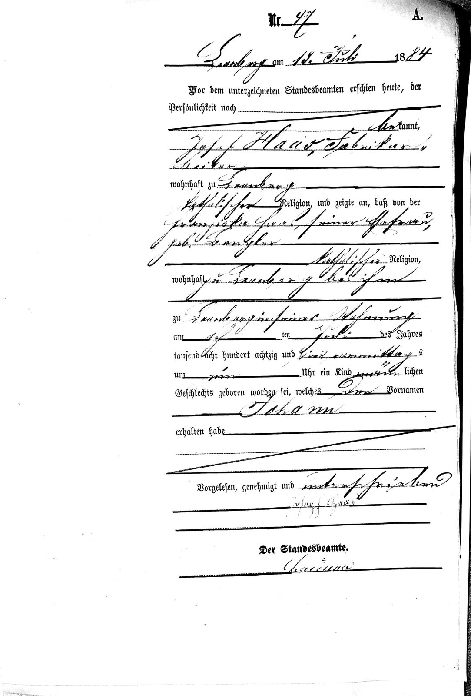

Teil VI · Winter in Bayern
Kapitel 17 — 6. Februar 2018: Die Tür des Standesamts
49,2° N · 12,1° O, Maxhütte-Haidhof (ehemals Leonberg und Sandberg), Oberpfalz
Ein Name, von anderen geschrieben, ist eine Erinnerung. Ein Name, mit eigener Hand geschrieben, ist eine Gegenwart.
Regensburger Straße 18
Im System der Stadtverwaltung tauchte ein Haas auf, 1941 in Leonberg geboren und noch immer in der Stadt wohnhaft. Ich war wegen etwas anderem gekommen.
Die Adresse hatte ich mir lange vor der Abreise aus Brasilien notiert, und sie ist das Einzige an jenem Morgen, das ich ohne jedes Zögern aufschreiben kann: Regensburger Straße, Hausnummer 18. Dort ist das Standesamt von Maxhütte-Haidhof untergebracht. Die Straße trägt den Namen der großen Stadt im Süden, Regensburg, in deren Richtung sie zeigt. So benennen die kleinen Städte in Deutschland gern ihre Hauptstraßen: nach einer Richtung. Die Regensburger Straße ist die Straße, die nach Regensburg führt. Ein Meteorologe schätzt diese Ehrlichkeit. Auch die Winde heißen nach dem, woher sie kommen.
Ich hatte mir vorgenommen, in diesem Kapitel, dem wichtigsten des Buches, strenger zu sein als in jedem anderen. Deshalb werde ich weder die Farbe der Tür beschreiben noch die genaue Temperatur an jenem Morgen noch den ersten Satz, den ich auf der anderen Seite des Schalters hörte. Ich habe mir diese Dinge nicht notiert, und nach ein paar Jahren beginnt das Gedächtnis, die Lücken mit dem Wahrscheinlichen zu füllen. Ich weiß, wie das funktioniert. Es ist derselbe Vorgang, den die numerischen Modelle bei der Assimilation von Beobachtungen benutzen: Wo keine Daten sind, setzt das Modell ein, was die Physik für wahrscheinlich hält. Manchmal trifft es. Manchmal erzeugt es einen Sturm, den es nie gegeben hat. In diesem Kapitel will ich nur die Beobachtungen.
Die Beobachtungen sind diese. Am 6. Februar 2018 waren wir im Standesamt von Maxhütte-Haidhof. Bedient wurden wir vom Standesbeamten Peter Henn. Wir gingen mit einer Kopie des Geburtseintrags Nr. 47 aus dem Jahr 1884 hinaus, ausgestellt vom Standesamt Leonberg: der Geburt von Johann Haas, dem Fata, meinem Großvater, eurem Urgroßvater. Und wir gingen mit der Auskunft über den Haas von 1941 hinaus, nach dem ich nicht gesucht hatte und der mich seitdem begleitet.
Mehr muss ich nicht sagen, damit ihr versteht, warum dies der Höhepunkt des Buches ist. Der Rest dieses Kapitels ist der Versuch, diesen vier Sätzen das Gewicht zu geben, das sie für mich hatten.
Von Herrn Henn bewahre ich den Namen und die Dankbarkeit. Ich werde keine Gespräche zwischen uns erfinden. Ich kann nur sagen, was jeder wiedererkennen wird, der schon einmal in einem europäischen Archiv geforscht hat: Die Anfrage eines Ausländers, in einem Deutsch aus dem Wörterbuch, mit einem ausgedruckten Stammbaum und einer Schiffsliste in der Hand, ist an einem gewöhnlichen Vormittag nicht die einfachste Sache der Welt. Dass er sie angenommen, gesucht, gefunden und das Papier ausgestellt hat, ist ein Dienst an der Allgemeinheit, der für uns die Größe eines Jahrhunderts hatte. Sollte dieses Buch je zu ihm gelangen, so möge er diesen Absatz als Dank annehmen.
Eine Stadt mit dem Namen eines Hüttenwerks
Maxhütte-Haidhof ist eine Stadt mit einem merkwürdigen Namen, auch für Deutsche. Eine Hütte ist eine kleine, einfache Behausung, im Berg- und Eisenwesen aber auch ein Hüttenwerk, das Haus, in dem Eisen geschmolzen wird. Max steht für Maximilian, König Maximilian II. von Bayern, der um die Mitte des 19. Jahrhunderts regierte und dem in jener Zeit gegründeten Eisenwerk seinen Namen lieh, der Maximilianshütte. Haidhof war der Ort, an dem sich das Werk ansiedelte. Die Stadt wuchs um die Schlote herum und hieß am Ende wie sie. Leonberg und Sandberg, die beiden Namen, die die Familie im Gedächtnis behalten hat, sind Ortsteile, die heute zur selben Gemeinde gehören.
Josef Haas, mein Urgroßvater, euer Ururgroßvater, war Arbeiter in diesem Werk. Der Eintrag von 1884 nennt ihn Fabrikarbeiter. Jahrelang habe ich hier geschrieben, er sei in Stoffen bei Landsberg am Lech geboren, als Sohn eines Ziegeleiarbeiters namens Georg Haas. In Kapitel 4 habe ich erzählt, wie das Heiratsbuch von Leonberg diesen Irrtum aufgelöst hat: Der Joseph aus Stoffen war ein anderer, und die Eltern des unseren waren Michael Haas und Kunigunde Stadelmann. Das ist der häufigste Fehler in der Genealogie, ein Vetter jenes Fehlers, bei dem man in einem Kirchenbuch mit dem Auge um eine Zeile verrutscht: ein gleicher Name, ein plausibles Datum, und niemand prüft die Eltern. Woher Michael und Kunigunde kamen, habe ich noch nicht mit eigenen Augen gesehen. Eine Lesung, die noch zu prüfen ist, sagt Etzgersrieth, ein Nachbarort von Heumaden. So weit reicht der Faden vorerst.
Ich denke oft an diese Linie, die in Leonberg endet. Ein junger Mann verlässt sein Dorf und geht in ein Eisenwerk arbeiten. In Kapitel 15 habe ich vom Erbrecht in Altbayern gesprochen, wo das Land meist ungeteilt an ein einziges Kind ging und die anderen sehen mussten, wo sie blieben. Ich weiß nicht, ob das bei Michael oder Josef der Fall war. Aber ich weiß, dass das Muster so aussieht: Wer nicht erbt, wird Arbeiter, und der Arbeiter geht dorthin, wo es Arbeit gibt. Um die Mitte des 19. Jahrhunderts gab es in Bayern Arbeit dort, wo Schlote standen.
Und dann lernt der Sohn dieses Arbeiters, Johann, das Stuckateurhandwerk, heiratet ein Mädchen aus Heumaden, bekommt vier Kinder, verliert zwei und tut mit 28 Jahren, was sein Vater getan hatte, nur in größerem Maßstab: Er geht dorthin, wo es Land gibt. Vom Dorf zum Arbeiter in Leonberg, vom Arbeiter in Leonberg zum Kolonisten in Rio do Ouro. Generation um Generation Aufbrüche, immer fort vom Land der Eltern. Die Haas sind eine Familie von Leuten, die nicht geerbt haben und deshalb in Bewegung gerieten. Vielleicht haben sich Johanns Nachkommen deshalb später über Paraná, über Londrina, über halb Brasilien verstreut.
Die Oberpfalz hat eine lange Geschichte mit dem Eisen. Deutsche Historiker nennen die Gegend manchmal „das Ruhrgebiet des Mittelalters“: Es gab Erz in den Hügeln, Holz in den Wäldern für die Holzkohle und Flüsse, die die Hämmer antrieben, und jahrhundertelang schmiedeten diese Dörfer Eisen für halb Europa. Die Maximilianshütte des 19. Jahrhunderts war das industrielle Kapitel dieser alten Geschichte, mit Hochöfen, Walzwerken und Eisenbahnen. Heute ist das Werk, das der Stadt den Namen gab, Industriegeschichte, wie so viele andere in Europa. Aber 1884 war es das Herz von Leonberg.
Ich versuche, mir die Kindheit des Fata an diesem Ort vorzustellen, und kann sie nicht vom Lärm trennen. Ein Junge, der neben einem Eisenwerk aufwächst, wächst mit dem Pfiff der Schichtwechsel auf, sieht nachts den Feuerschein der Öfen, atmet eine Luft, die, wenn ich sie messen könnte, sicher mehr Ruß enthielt als die Luft von Heumaden. Merkwürdig, dass er dem Vater nicht ins Werk folgte. Er zog den Gips vor, einen Stoff ganz anderer Natur: Eisen schmilzt bei fünfzehnhundert Grad, Gips härtet bei Raumtemperatur; Eisen macht Schienen, Gips macht Engel. Der Text zum Hundertjahrfeier sagt, Johann sei „aus einer Familie von Maurern gekommen“. Vielleicht war die Familie der Mutter, die Dengler, eine Familie von Bauleuten; vielleicht Josefs ältere Brüder; vielleicht hat auch nur Johann selbst die Kelle statt des Hammers gewählt. Ich weiß es nicht. Ich weiß, dass er, als er nach Santa Catarina kam, keine Gießerei suchte. Er suchte Mauern zum Hochziehen und Gräber zum Schmücken. Und das brachte er seinen Söhnen bei.
Fernando, Alexandre und Baldoíno, der Vater eures Vaters, lernten das Handwerk bei ihm, noch als Jungen, und mit der Maurerkelle ernährten sie ihre Familien. Wenn ich an die Linie denke, die von den Hochöfen in Sandberg ins Alto Vale do Itajaí führt, sehe ich eine Familie, die immer mit Erde gearbeitet hat, die durch Feuer oder Wasser verwandelt wurde: Erz, zu Eisen geschmolzen, Gipsstein, gemahlen und angerührt zu Gips, Sand und Kalk zu Mörtel.
Am 6. Februar 2018 kam zum ersten Mal seit hundertfünf Jahren jemand mit diesem Familiennamen zurück, um ein Blatt Papier abzuholen.
Das Buch von 1884
Das deutsche Personenstandswesen, wie wir es kennen, ist jung. Bis in die 1870er-Jahre beurkundete in Bayern die Kirche die Geburten, in den Taufbüchern der Pfarreien. Ab 1876 machte ein Reichsgesetz die Zivilstandsregister verpflichtend, und jede Gemeinde bekam ihr Standesamt mit ihrem Standesbeamten, der die Anzeigen entgegennahm. Ein vorgedrucktes Formular in deutscher Schrift, mit Lücken, die von Hand ausgefüllt wurden. Johann kam acht Jahre danach zur Welt. Deshalb gibt es für ihn ein standesamtliches Dokument und nicht nur ein kirchliches.
Das Dokument verdient es, in Ruhe gelesen zu werden, Zeile für Zeile, so wie ich es gelesen habe.
Oben die Nummer: Nr. 47. Darunter Ort und Datum der Anzeige: Leonberg, 13. Juli 1884. Dann der vorgedruckte Text, unterbrochen von der Handschrift des Schreibers. Vor dem unterzeichneten Standesbeamten erschien heute, der Persönlichkeit nach bekannt, und hier schreibt die Feder: Josef Haas, Fabrikarbeiter. Wohnhaft in Leonberg. Katholischer Religion. Und zeigte an, dass von der Franziska Haas, geborenen Dengler, seiner Ehefrau, katholischer Religion, wohnhaft bei ihm in Leonberg, zu Leonberg in seiner Wohnung am elften Juli des Jahres tausend achthundert achtzig und vier, nachmittags um fünf Uhr, ein Kind männlichen Geschlechts geboren worden sei, welches den Vornamen erhalten habe:
Johann.
Der Name ist in einer größeren Schrift geschrieben als das Übrige, sorgfältiger, fast feierlich. Vielleicht bilde ich mir das ein. Vielleicht hatte der Schreiber einfach mehr Platz in der Zeile. Aber wer dieses Papier liest, nachdem er sein ganzes Leben lang den Namen des Großvaters getragen hat, hat den Eindruck, dass jemand 1884 wusste, dass dieser Name um die Welt gehen würde.
Darunter die Schlussformel: Vorgelesen, genehmigt und unterschrieben. Und darunter die Unterschrift des Anzeigenden. Josef Haas. In seiner eigenen Hand. Eine zittrige, schräge Schrift, die Schrift eines Mannes, der nicht jeden Tag schrieb, aber schreiben konnte. Noch weiter unten Der Standesbeamte und das Kürzel des Beamten von 1884, das ich nicht entziffern konnte.
Archivkarte: Geburtseintrag Nr. 47/1884, Standesamt Leonberg (heute Standesamt Maxhütte-Haidhof, Regensburger Straße 18), beurkundet am 13.07.1884; Kopie erhalten am 06.02.2018. Anzeigender: Josef Haas, Fabrikarbeiter, wohnhaft in Leonberg, katholisch. Mutter: Franziska Haas, geborene Dengler, katholisch, wohnhaft in Leonberg. Geburt: 11. Juli 1884, nachmittags um fünf Uhr, in der Wohnung des Anzeigenden in Leonberg. Männliches Geschlecht. Vorname: Johann. Schlussformel: Vorgelesen, genehmigt und unterschrieben, mit der Unterschrift des Vaters Josef Haas und dem Kürzel des Beamten. Bild im Repositorium: imagens/doc_haas_nascimento_johann_1884.jpg.

Es gab eine Unklarheit, die dieses Papier beseitigte. In Agenors Tabelle, die jahrelang unsere beste Quelle war, ist Johann am „8. Juli“ geboren. Der Eintrag sagt den elften. Der Unterschied beträgt drei Tage und mag klein erscheinen, aber für einen Forscher ist er alles: Eines der beiden Daten ist richtig und das andere falsch, und nur das Originaldokument entscheidet. Agenor, der Ingenieur ist, weiß besser als jeder andere, dass eine überprüfte Messung mehr wert ist als eine notierte; in diesem Buch gilt das Standesamtsregister, und der Fata hat am 11. Geburtstag. Er starb 1969, ohne zu ahnen, dass es diese Frage einmal geben würde. Ich glaube, er hätte darüber gelacht.
Die Unterschrift
Bei dieser Unterschrift muss ich einen Moment verweilen, denn sie war es, die mich aus der Fassung brachte.
Ein Meteorologe hat sein Leben lang mit indirekten Zeichen zu tun. Wir sehen den Wind nicht: Wir sehen, was er mit einem Anemometer macht. Wir sehen die Kaltfront nicht: Wir sehen den Temperatursprung in einer Kurve. Fast alles, was wir über die Atmosphäre wissen, stammt aus Spuren. Und jahrelang war auch alles, was ich über die Haas in Deutschland wusste, nur Spur: der Name in einer Schiffsliste, ausgefüllt von einem französischen Schreiber; der Name in einer Tabelle, eingetippt von einem Cousin; der Name in einem Taufeintrag aus Stoffen, geschrieben von einem Pfarrer, und der war nicht einmal der unsere. Immer die Hand eines anderen.
Die Unterschrift von Josef Haas war in diesem ganzen Stapel das Erste, was ein Haas aus Bayern mit eigener Hand geschrieben hatte. Kein Eintrag über ihn: eine Geste von ihm. An einem Julitag 1884 nahm ein siebenunddreißigjähriger Arbeiter, die Hände wahrscheinlich gezeichnet von der Arbeit im Werk, eine Stahlfeder und zeichnete seinen eigenen Namen auf ein amtliches Blatt, um dem Staat zu sagen, dass ihm ein Sohn geboren war. Dieser Sohn sollte mein Großvater werden. Die Feder zitterte ein wenig. Die Tinte verlief bei einem Buchstaben. Und das Papier bewahrte all das hundertvierunddreißig Jahre lang.
Ich erlaube mir hier eine nachgestellte Szene, und ihr wisst: Wenn ich das tue, ist es Vorstellung, die sich auf ein Dokument stützt.
Leonberg, Oberpfalz, 13. Juli 1884. Josef Haas verlässt an einem Sommersonntag das Haus. Vor zwei Tagen hat Franziska entbunden, an einem Freitag um fünf Uhr nachmittags, und das Gesetz schreibt vor, die Geburt beim Standesbeamten anzuzeigen. Er trägt, stelle ich mir vor, die am wenigsten abgetragene Kleidung, die er hat. Der Beamte kennt ihn; der Eintrag sagt der Persönlichkeit nach bekannt, was bedeutet, dass Josef keine Zeugen brauchte, um zu beweisen, wer er war. Leonberg ist klein, und einen Arbeiter aus dem Werk kennt man. Der Beamte füllt das Formular aus und fragt nach dem Namen des Kindes. „Johann“, sagt Josef. Es ist ein gewöhnlicher Name, der gewöhnlichste von allen im katholischen Bayern, der Name des Täufers und des Evangelisten. Der Beamte schreibt. Er liest den Eintrag laut vor. Josef sagt, es sei richtig, und unterschreibt.
Ich weiß nicht, ob es so war. Ich weiß, dass es so hätte sein können und dass das Wesentliche auf dem Papier steht: der Tag, die Stunde, die Namen, die Unterschrift.
Beim Anblick dieser Schrift denke ich an all die Papiere, die Johann später unterschreiben würde. Die Heirat in Eibenstock 1907. Irgendein Einschiffungsdokument in Marseille 1913. Die Urkunde über Lote 17 in Rio do Ouro, zusammen mit dem Freund, mit dem er das Land kaufte. Die Verträge für die Bauten in Ituporanga: die Hauptkirche, das Pfarrhaus, das Franziskanerseminar, den Erweiterungsbau des Schwesternkrankenhauses. Keines dieser Papiere habe ich. Aber plötzlich wusste ich, wie die Schrift seines Vaters ausgesehen hatte. Und ich dachte an meine eigene Unterschrift, die ihr von den Schulzeugnissen kennt, von den Einverständniserklärungen für Ausflüge, von den Vollmachten. Alles hängt an ein und derselben Hand, die nach und nach den Besitzer wechselt.
Das zweite Blatt
Johanns Eintrag war das, wonach ich gesucht hatte. Das zweite Blatt war das, was ich fand.
Bei Recherchen auf einem deutschen Standesamt durchsucht das System der Stadtverwaltung die Register nach dem Familiennamen. Und unter den Treffern jenes Morgens erschien ein lebender Mensch: ein Haas, 1941 in Leonberg geboren, wohnhaft in Maxhütte-Haidhof.
Ich will hier vorsichtig sein, und ich erkläre, warum. Diesen Mann gibt es: Er ist ein Mensch aus Fleisch und Blut, der, als ich dort war, Anfang siebzig war, in derselben Stadt wohnte, in der der Fata geboren wurde, und nicht wusste (oder, wenn er es wusste, nichts von mir wusste), dass ein Nachkomme des ausgewanderten Sohnes von Josef Haas mit einem Stammbaum in der Hand in derselben Stadt stand. Er hat ein Recht auf seine Privatsphäre, und das europäische Recht schützt dieses Recht, vom Anstand ganz abgesehen. Deshalb nennt dieses Buch weder seinen Namen noch seine Straße noch irgendetwas, womit man ihn finden könnte. Und dieses Buch erzählt von keiner Begegnung mit ihm. Es würde davon erzählen, wenn es etwas zu erzählen gäbe.
Ein Haas, 1941 in Leonberg geboren. Mitten im Krieg. Im selben Jahr, in dem auf der anderen Seite der Welt Brasilien mit Deutschland brach und der Fata im Alto Vale do Itajaí die geladene Flinte in Reichweite hielt und im Keller Radio hörte, während ein Enkel die Straße im Auge behielt. Während die Familie in Santa Catarina lernte, Angst davor zu haben, Deutsch zu sprechen, wurde in Leonberg ein Kind mit demselben Familiennamen geboren, in einem Deutschland, das bombardiert, besetzt und geteilt werden sollte. Die beiden Hälften der Familie erlebten denselben Krieg auf entgegengesetzten Seiten des Ozeans, ohne voneinander zu wissen. Der Text zum Hundertjahrfeier erzählt, dass João und Maria 1945 Kleidung und Lebensmittel in das zerstörte Deutschland schickten, ohne zu wissen, ob sie dort noch lebende Verwandte hatten, „wenn sie überhaupt noch welche hatten“. Vielleicht hatten sie welche: In Leonberg gab es einen vierjährigen Jungen mit demselben Familiennamen.
Ich weiß nicht, in welchem Grad er mit uns verwandt ist. Johann hatte Geschwister: Josef, Alois, Georg, Maria, Franziska, Therese. Die Männer gaben den Familiennamen weiter. Wenn dieser Haas von 1941 der Enkel eines von ihnen ist, dann war sein Vater ein Cousin ersten Grades meines Vaters, Opa Baldoíno, und er ist mein Cousin zweiten Grades. Und eurer, noch entfernter, aber ein Cousin. Es kann auch ganz anders sein. Haas ist in Deutschland kein seltener Name, und ein Namensvetter in einer Arbeiterstadt wäre durchaus möglich. Ein ehrlicher Forscher darf die Verwandtschaft ohne Dokument nicht behaupten, und ich habe das Dokument nicht. Ich habe die Übereinstimmung des Ortes, die stark ist, und die Übereinstimmung des Namens, die schwach ist.
Dazu kommt die Falle der gleichnamigen Orte, von der ich in Kapitel 2 gesprochen habe. Es gibt ein viel bekannteres Leonberg als unseres, bei Stuttgart in Württemberg, und es gibt dort auch ein Heumaden, heute ein Stadtteil von Stuttgart. Lange Zeit landete jeder, der unsere Namen auf der Karte suchte, zuerst an diesen Orten, Hunderte von Kilometern vom richtigen entfernt. Ein Meteorologe kennt diese Art Fehler: Es ist der einer Station mit vertauschten Koordinaten, die einen richtigen Wert vom falschen Ort meldet und die ganze Karte verdirbt. Deshalb genügt mir ein gleicher Familienname in einer Stadt gleichen Namens nicht. Aber hier ist keine Verwechslung des Ortes möglich: Es war das Leonberg des Eintrags Nr. 47, das Leonberg in der Oberpfalz, dasselbe, in dem Josef 1884 unterschrieben hatte. Wenn es eine Unklarheit gibt, dann liegt sie allein im Blut.
Es gibt eine Komplikation, und ich halte sie fest, weil sie zur Geschichte gehört. Auf derselben Reise suchte ich das Haus. Peter, mit dem ich sprach, sagte, der Cousin meines Vaters lebe. Die Nachbarn des Hauses, zu dem ich kam, sagten etwas anderes: Der gleichnamige Haas sei gestorben, und seine Töchter wohnten in Österreich. Vielleicht habe ich am falschen Haus geklopft. Vielleicht sprachen die beiden von verschiedenen Personen. Ich habe das dort nicht geklärt, und ich werde es hier nicht mit Vermutungen klären.
Und es gibt ein Schweigen, das ich jetzt anders verstehe. Der Fata sprach nicht von den lebenden Verwandten in Deutschland. Aber die Familie bewahrte Briefe auf, die von dort kamen, von einer Adresse im Vogtland in Sachsen. Jemand auf der anderen Seite wusste von uns.
An jenem Morgen dachte ich nicht wie ein Forscher. Ich dachte wie ein Enkel. Was ich fühlte, ist, so stelle ich mir vor, was ein Schiffbrüchiger fühlt, der nach vielen Tagen Rauch auf einer Insel sieht. Es ist nicht die Rettung. Es ist der Beweis, dass dort Menschen sind.
Während der ganzen Forschung, seit dem Tisch in Vidal Ramos im Jahr 2012, war es diese Frage, die das Buch antrieb: Ist auf der anderen Seite noch jemand? Der Fata starb 1969 in dem Glauben, nein. Ich glaubte, die Mota sei 1973 gestorben, ohne dass jemand auf der anderen Seite davon erfuhr. Erst 2026, mit den Briefen aus Rempesgrün in Kapitel 7, entdeckte ich, dass ihre Verwandten in Sachsen davon erfahren und ihr Beileid geschickt hatten. Die den Faden hatten fallen lassen, waren wir. Und da war nun, auf dem Bildschirm einer Stadtverwaltung in der Oberpfalz, das Ende des Fadens auf der anderen Seite.
Ich schreibe diese Seiten also auch als einen möglichen Brief. Sollte dieses Buch eines Tages, übersetzt oder nicht, zu einem Haas gelangen, der 1941 in Leonberg geboren wurde, dann soll er wissen, dass 1913 ein junger Mann namens Johann, Sohn des Arbeiters Josef und der Franziska Dengler, von dort aufbrach und mit seiner Frau und zwei kleinen Kindern nach Brasilien ging; dass dieser junge Mann an einem Ort namens Ituporanga Kirchen und Grabmäler gebaut hat; dass er zwölf Kinder hatte, von denen sieben erwachsen wurden; dass seine Nachkommen heute mehr als sechshundert sind; und dass einer dieser Nachkommen an einem Februarmorgen in der Regensburger Straße war und erfuhr, dass es ihn gibt. Die Tür bleibt offen. Ich weiß nicht, ob jemand anklopfen wird.
Der Ballon durchstößt die Wolke
Es gibt einen Moment im Leben eines Meteorologen, der nie aufhört, schön zu sein: den Start einer Radiosonde. Ein Latexballon, mit Wasserstoff oder Helium gefüllt, an dem ein kleines Kästchen mit Sensoren hängt, steigt von der Station auf und beginnt, Druck, Temperatur und Feuchte zu senden. Auf dem Bildschirm zeichnet sich das Profil von unten nach oben. Eine Zeit lang sind die Zahlen vorhersehbar: Die Temperatur fällt, die Feuchte schwankt. Und dann tritt der Ballon plötzlich in eine Wolke ein, die Feuchte geht auf hundert Prozent, die Temperaturkurve knickt, und man weiß, dass er jetzt drinnen ist, mitten im Weiß, ohne etwas zu sehen. Und dann, noch plötzlicher, tritt er oben heraus, die Feuchte stürzt ab, die Luft wird trocken und klar, und der Ballon steigt weiter in einen Himmel, den von unten niemand sah.
Die ganze Forschung seit 2012 war der Ballon in der Wolke gewesen. Namen, die nicht zusammenpassten, abweichende Daten, gleichnamige Orte, eine Tabelle mit Lücken, eine Schiffsliste mit einem falschen Alter, ein „Leonberg“, das ein anderes Leonberg sein konnte, ein „Sandberg“, das ich auf der Karte nicht fand. Feuchte hundert Prozent. Und der Eintrag Nr. 47 war der Moment, in dem der Ballon oben herauskam. Von einem Augenblick auf den anderen wurde die Luft klar. Johann Haas, geboren am 11. Juli 1884, um fünf Uhr nachmittags, in Leonberg. Sohn von Josef Haas, Fabrikarbeiter, und Franziska Dengler. Väterlicherseits Enkel von Michael Haas und Kunigunde Stadelmann, wie ich erst 2026 erfahren sollte. Eine gerade Linie ohne Wolken, von euch bis zum Rauch von Sandberg.
Ich weiß nicht, wie lange wir drinnen waren. Ich werde es nicht erfinden. Ich weiß, dass ich mit dem Papier hinausging und dass draußen auf der Straße die Kälte dieselbe war wie vorher, ich aber nicht.
Wenn ich heute an jenen Morgen zurückdenke, denke ich an Opa Baldoíno, der im Dezember 2013 starb, vier Jahre davor. Er war das zehnte Kind von Johann, das 1924 auf der Lichtung von Rio Novo geboren wurde. Er hätte dieses Papier gern gesehen. Vielleicht hätte er nichts gesagt, denn die Männer seiner Generation sagten wenig. Vielleicht wäre er nur langsam mit dem Finger über die Unterschrift des Großvaters gefahren, den er nie gekannt hat. Ich denke an Oma Adelina, die in jenem Februar noch lebte, in Vidal Ramos. Ich denke an euch beide, die das eines Tages lesen würden.
Und ich denke schließlich an das, was dieses Papier noch nicht sagte: Es fehlte die Hälfte. Der Eintrag Nr. 47 gab mir den Fata ganz, mit Vater, Mutter, Großvater und Dorf. Aber der Fata war nie allein. Neben ihm, in der Schiffsliste, auf dem Abschiedsfoto, im Grab von Aurora, war immer sie. Das Mädchen, das um zwei Uhr nachts in einem hügeligen Dorf nahe Böhmen geboren wurde und dessen Namen die Familie ein Jahrhundert lang wiederholte wie jemand, der ein Gebet aufsagt, ohne die Worte zu verstehen.
Es fehlte die andere Hälfte: die Mota. Es fehlte Heumaden.
Für euch zum Entdecken
- In welchem Verwandtschaftsgrad, wenn überhaupt, steht der 1941 in Leonberg geborene Haas zu Josef Haas? Wenn er der Enkel eines Bruders von Johann ist, von welchem: Josef, Alois oder Georg?
- Wer hatte recht: Peter, der sagte, der Cousin meines Vaters lebe, oder die Nachbarn, die sagten, der gleichnamige Haas sei gestorben und seine Töchter wohnten in Österreich? Habe ich am falschen Haus geklopft?
- Wer auf der anderen Seite hat die Briefe aus dem Vogtland geschrieben, und was steht darin? Fragt die Ältesten der Familie, wo diese Briefe sind.
- Von wem hat Johann das Arbeiten mit Gips gelernt, wenn der Text zum Hundertjahrfeier sagt, er sei „aus einer Familie von Maurern gekommen“, und sein Vater Arbeiter im Hüttenwerk war? Von den Dengler, von Josefs älteren Brüdern oder von niemandem aus der Familie?